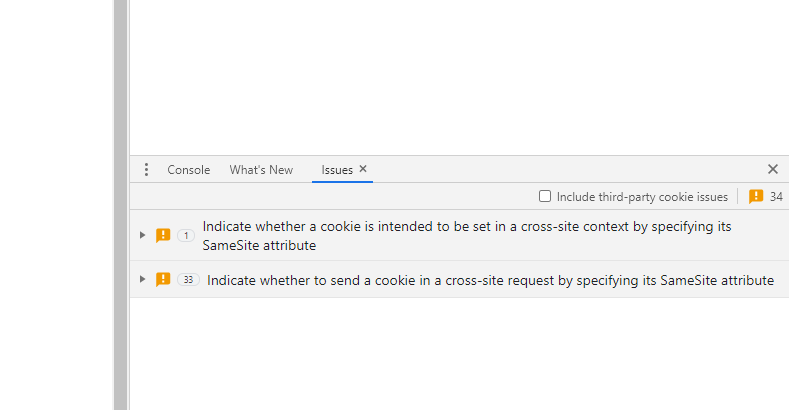

W4-W9 <<
Previous Next >> W8
W6

根據 https://github.com/tinymce/tinymce/issues/3611
因為目前 cmsimde 所使用的 tinymce 使用 "4.3.13" 版, 必須更新為 4.5 或 4.6 之後, 才能避開以下的錯誤:

https://www.kaggle.com/mdecourse/2020bw6
'''
定義用來取各班註冊資料的函式
各班在 1091 課號
cp
1a 1091/0762
1b 1091/0776
cad
2a 1091/0788
2b 1091/0801
'''
# 透過 urllib.request 模組中的 urlopen() 開啟網路 url 連結資料
import urllib.request # the lib that handles the url stuff
# 定義一個輸入學期與課號,就能夠輸出各課程修課人員數列的函式
def getRegList(semester, courseno):
# 因為課號可能以 0 開頭, 因此採字串型別輸入, 為了一致, 輸入變數一律採字串輸入
target_url = "https://nfulist.herokuapp.com/?semester=" + semester + "&courseno=" + courseno
regList = []
for line in urllib.request.urlopen(target_url):
# 由於 urlopen() 取下的網際資料為 binary 格式, 可以透過 decode() 解碼為 ASCII 資料
regList.append(line.decode('utf-8').rstrip())
# 此一函式利用 return 將資料傳回
return regList
'''
根據學號與 github 帳號建立 dic 資料數列
'''
#import urllib.request # the lib that handles the url stuff
# 利用 ethercalc 取得使用者 github 帳號, 理論上可以建立網際表單, 讓使用者以從表單輸入帳號資料
target_url = "http://mde.tw/cp2020/downloads/hw2/cpb_github_account.txt"
cp1b = []
for line in urllib.request.urlopen(target_url):
cp1bTemp = line.decode('utf-8').rstrip()
#print(line.decode('utf-8'), end = "") #utf-8 or iso8859-1 or whatever the page encoding scheme is
cp1b.append(cp1bTemp.split('\t'))
#print(cp1b)
# drop the first element of cp1b and convert into dictionary
cp1bAccount = dict(cp1b[1:])
# check into the cp1bAccount dict for "40923208"
print(cp1bAccount["40923208"])
'''
根據各班註冊名單與 github 帳號 dict, 建立正確的學員倉儲與網頁連結
'''
# 特別注意: 單行註解的 # 不可使用中文全形字元
# 直接利用前面已經定義的 getRegList() 函式取得 cp1b 選課學員名單
# 以下處理 cp1a W3 頁面超文件資料
cp1bReg = getRegList("1091", "0776")
print("cp1bReg is:", cp1bReg)
# cp1bGroup 在前面已經定義完成, 代表第三週所完成的分組資料
#print("註冊名單: ", cp1bReg)
#print("分組名單: ", cp1bGroup)
# 以下還需要取得 cp1bAccount
# classTitle = 'cp2020'
# 以下設法根據註冊名單與分組名單建立倉儲與網頁超文件.
# 倉儲: https://github.com/ + account + / + classTitle
# 網頁: https:// + account + .github.io/ + classTitle
# 必須進行學員是否選課檢查, 否則無法剔除已經退選的學員
# 利用 dropStud 收集已經退選名單
dropStud = []
# 分組二維數列
cp1bGroup = [[40823148, 40923203, 40923208, 40923209, 40923210, 40923223, 40923225, 40923230, 40923238, 40923239, 40923244, 40923249], [40523148, 40923201, 40923202, 40923218, 40923219, 40923228, 40923231, 40923232, 40923240, 40923247, 40923248, 40923250], [40823152, 40923205, 40923212, 40923214, 40923217, 40923226, 40923236, 40923241, 40923242, 40923246, 40923251], [40723217, 40728238, 40923206, 40923216, 40923220, 40923227, 40923233, 40923237, 40923243, 40923252, 40923253], [40523138, 40923204, 40923207, 40923211, 40923213, 40923221, 40923224, 40923229, 40923234, 40923235, 40923245]]
print("cp1bGroup is:", cp1bGroup)
for gpNum in range(len(cp1bGroup)):
# cp1bGroup[gpNum] is the member list of group number (gpNum + 1)
# 從第一組與第二組中間才加入組別分隔符號
if gpNum != 0:
print("<br />"*2)
print("==============================")
print("<br />"*2)
print("group " + str(gpNum + 1) + ":" + "<br />"*2)
# 接下來逐組列出組員, 先判定是否在選課名單中, 再利用學號與 github 帳號拼出所需要的 html
for i in range(len(cp1bGroup[gpNum])):
# check if cp1bGroup[gpNum][i] still in cp1aReg
if str(cp1bGroup[gpNum][i]) in cp1bReg:
# 因為若學員不在選課名單中, 則以選課名單產生的 dict 資料中無法取得對應資料
# 因此除了判定學號是否在選課名單中之外, 也可以用 try: except: 進行處理
#try:
# 從分組數列中按照順序取出各學員學號
memberNum = cp1bGroup[gpNum][i]
# 根據學號至 github 帳號 dict 中查出對應的 github 帳號
memberAccount = cp1bAccount[str(memberNum)]
#print(memberAccount)
# 1a 的課程代號
courseTitle = "cp2020"
print("Repository: <a href='https://github.com/" + str(memberAccount) + "/" + courseTitle + "'>" + str(memberNum) + "</a> | ", end="")
print("Site: <a href='https://" + str(memberAccount) + ".github.io/" + courseTitle + "'>" + str(memberNum) + "</a><br />")
else:
#except:
#print(cp1aGroup[gpNum][i] + "已經不在修課名單中")
dropStud.append(cp1bGroup[gpNum][i])
# 列出已經退選名單
for i in range(len(dropStud)):
print(str(dropStud[i]) + "已經退選")
W4-W9 <<
Previous Next >> W8